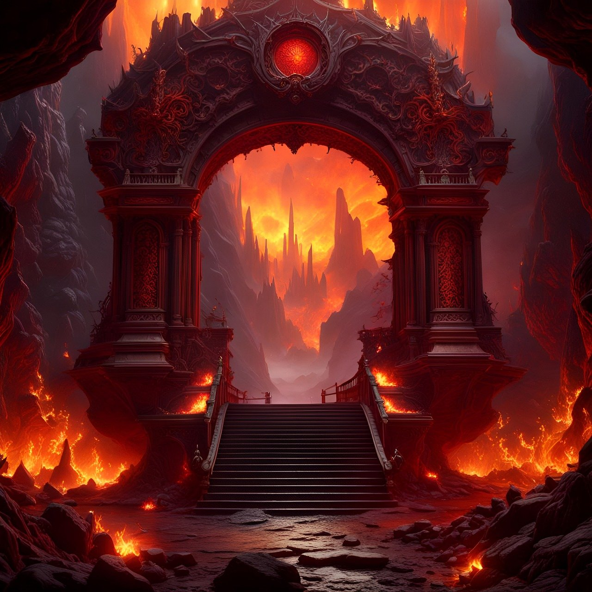

You have chosen the path of the rich man in the parable of "The rich man and Lazarus" in the Gospel of Luke, reflecting "The Great Reversal." Because of your greed, you will find a place of emptiness and solitude, where earthly priorities are reversed, and true justice is revealed.
